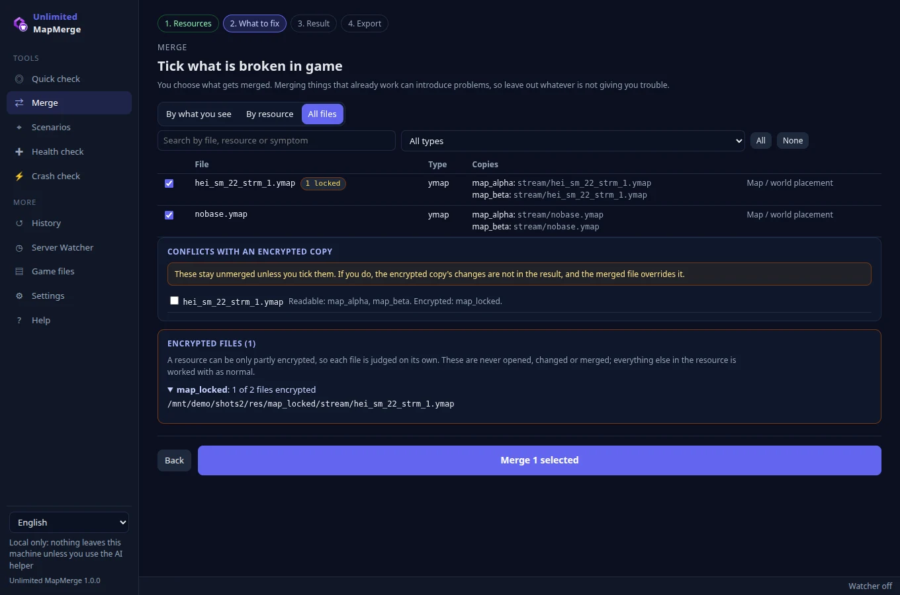
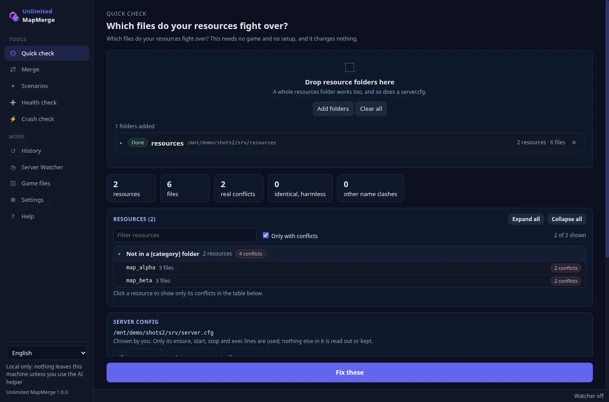
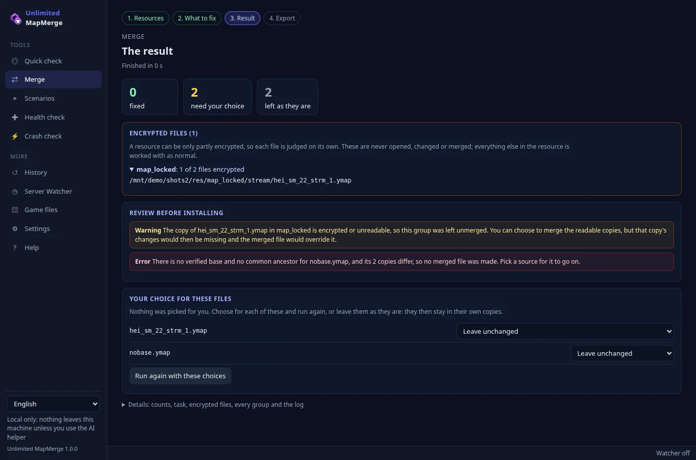
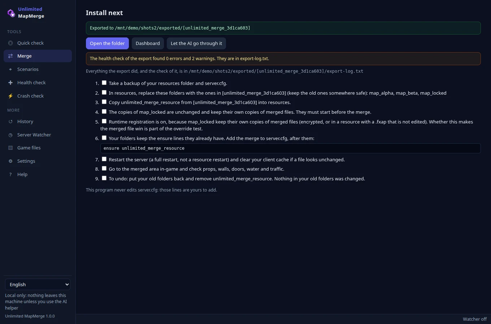
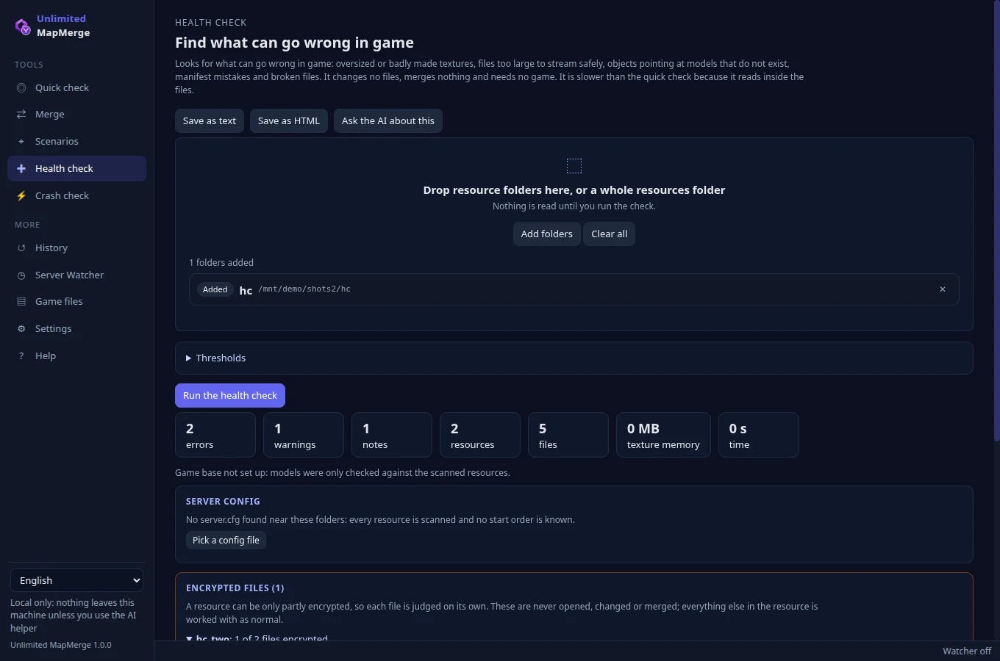
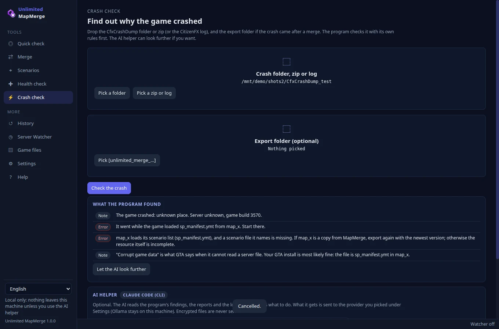

When two MLOs or map resources stream the same game file, only one copy wins and the other map breaks: props come back, walls vanish, lights hang in the air. Unlimited MapMerge finds those clashes, merges them against the game's own file and writes the result to a new folder. Your originals are never touched.
No account, no upload, no limits, no telemetry. Everything runs on your own machine. Made by Unlimited Reforge.

What it does
From a pile of map resources to one folder you can put on the server, with a check at every step.
Merges the clash
Files that more than one resource supplies are grouped and merged three ways against the game's own file: what each map added and what each map removed on purpose are both kept. Where the program is not sure it reports an Error or Warning and leaves the original alone.
Never touches your originals
The export is a new folder: copies of your resources with the merged files taken out, plus a merge resource. Your folders are opened for reading only, and server.cfg is never edited. To undo, put your old folders back.
Encrypted files stay closed
Escrow-locked files are detected one by one, listed by path and never opened, decrypted, edited or merged. A resource can be only partly encrypted, so the plain files next to them are worked with as normal.
Uses your own GTA V as the base
To tell a change from what the game already had, each copy is compared with the game's file, read from your own GTA V install. No Rockstar file ships with the program.
Checks before and after
A quick check shows what collides, a health check finds what can go wrong in game, and a crash check reads a CfxCrashDump and says in plain lines what it found. Every file written is read back before it may be exported.
Optional AI helper
Off if you want it off. It reads the program's findings, reports and logs and explains what to do. By default it can only read; it can be allowed to fix files in its own copy of the export, never in your originals.
Fixes what the game draws from afar
An MLO that takes the game's buildings or trees away, or lowers them out of sight, often leaves the game's distant model of them: walk away and the old building comes back. MapMerge reads the game's distant models over everything a resource took away and cuts out only those parts, also for one MLO alone. It checks its own result afterwards.
Ends "Duplicate Archetype"
An MLO that packs its own version of a game prop under the game's name makes the game print Duplicate Archetype and keep only one of the two. The health check names those props, and the export gives each a name of its own in its copy of the resource, wherever that is safe. When it is not safe, the prop is left as it is and the reason is given.

The quick check: which files your resources fight over

The result: what was fixed and what needs your choice

After the export: the install steps for your server
Download
Version 1.0.3 for Windows. The installer is on the GitHub release page, together with the release notes.
All releases · Windows 64-bit. Nothing else has to be installed.
Install
Windows
Run Unlimited-MapMerge-Setup-1.0.3.exe.
Pick the install folder. Desktop and Start menu shortcuts are made.
Start it. A short first-run setup asks for your language and looks for your GTA V by itself.
Uninstall later under Settings → Apps.
"Windows protected your PC" / unknown publisher. The installer is signed with Unlimited Reforge's own certificate, not one bought from a certificate authority, so Windows does not know the publisher yet and Microsoft SmartScreen may stop it the first time. Click More info, check that the file name is the one from the release page and that you got it from there, then click Run anyway. This is normal for a self-signed program and does not mean the file is damaged.
Your GTA V
The program looks for GTA V in the Rockstar launcher's and Steam's registry entries, in every Steam library, in Epic's manifests and in the usual folders. If it is not found, nothing is blocked: a merge that needs the game's own files asks for it then. You never have to point it at a server.
How it works
Four steps, shown at the top of the Merge page.
1 · Resources
Add the folders of the map resources, or a whole resources folder. Only names and file headers are read at this stage. A server.cfg next to them is found by itself or can be picked or dropped: only its ensure, start, stop and exec lines are used, to learn the start order and to suggest the game build. No line of the file is kept or shown.
2 · What to fix
Nothing is ticked until you tick it. Pick what is wrong in game (flickering, missing props, floating lights, invisible walls and so on), by resource, or from all files, and search by file, resource or symptom. Merging what already works can only add risk, so leave it out.
3 · Result
You see what was merged, what was left unchanged and what needs your choice. For a file the program cannot merge safely you choose: this copy, that copy, or a union where that is safe. Then run again with your choices.
4 · Export
Everything is written to one new folder. Before you install it, the export is checked again and the result is in export-log.txt. The install page lists exactly what to do next.
Order is priority
The resource lower in the list wins when two copies change the same thing. Set it like your server.cfg start order. When the program reads a server.cfg it also marks the copy the game uses today: FiveM registers streamed files in one sorted pass when a player joins, so the resource whose name sorts last wins. That is an assumption about FiveM, and the merge resource wins over every copy anyway when runtime registration is on, which is the default.
Game build
A merge is made for one game build. The list runs from 1604 (mpchristmas2018) to 3889 (mp2026_01). The default is 3570, the newest build FiveM supports today. If your server.cfg sets sv_enforceGameBuild, that build is suggested. Door tuning needs at least mpsecurity (2545) and the program suggests at least that build when door tuning is in the merge.
What it merges
Every merged file is read back and checked before it may be exported. When the engine is not sure it reports it and leaves the original.
File
How
.ymap
Entities (with LOD links across files), car generators, time cycle modifiers, occluders, grass and physics lists, record by record. A record one map removed on purpose stays removed.
LOD lights
vw_lodlights_* and vw_distlodlights_* as one matching list. Never one file without the other. A copy of a pair that only one resource ships (under an older prefix, or with "(1)" in its name) is left as it is.
.ybn
Polygon by polygon, with the BVH rebuilt.
Scenario .ymt
Points, overrides, clusters and chains; names and lookup grid rebuilt. Lists that an editor left pointing at nothing are mended before the merge and reported. There is also a page for scenario files alone.
.ytyp
By archetype name. Props that appear twice with the same model are kept once; different ones are reported.
doortuning.ymt, water.xml, gta5.meta
One unit, written to a separate level resource with replace_level_meta.
.ynd
Node by node, keeping the numbers other squares link to. Left unchanged when that cannot hold.
.ydr
Static models, mesh by mesh and only with the same shaders. Otherwise an Error and you pick. A distant (LOD) model that two resources' changes fall under is cut to fit both, and only a real change counts: a copy that another tool just saved again is the game's own.
.ynv
Not merged. If only one copy changed it, that copy is taken. If both changed it, you pick one.
_manifest.ymf
Not merged. Each resource keeps its own manifest file.
No base, no merge. If there is no game file and no common ancestor and the copies differ, you get an Error and a choice, never a guess. A union is only offered where it is safe, and it says that every removal is lost.
On the server
The export folder is named [unlimited_merge_ID]. It holds:
[unlimited_merge_ID]/
(a copy of each resource, with the merged files removed)
unlimited_merge_resource/ the merged stream files
unlimited_merge_level_ID/ merged water and door tuning, when any
README.txt, export-report.txt, export-report.json, export-log.txt
Take a backup of your resources folder and server.cfg.
Move the original folders that were merged out of resources, to somewhere safe, and put the copies from the export in their place. Copy unlimited_merge_resource (and unlimited_merge_level_ID, if there is one) into resources too.
Your folders keep the ensure lines they already have. Add the merge to server.cfgafter them. The program never edits server.cfg; those lines are yours.
Restart the server completely (not a resource restart) and clear your client cache if a file looks unchanged.
Go to the merged area in game and check props, walls, doors, water and traffic.
ensure my_first_mlo
ensure my_second_mlo
ensure unlimited_merge_resource
ensure unlimited_merge_level_1a2b3c4d # only if the export has one
To undo: put your old folders back and remove unlimited_merge_resource and the level resource. Nothing in your old folders was changed.
Runtime registration. The merge resource registers its files when the game runs, so the merged copies win over every other copy. It is on by default. If a merged file does not take effect, check that the merge starts last and that you restarted fully.
The merge does not wait for the resources it merged. A resource that cannot start, such as an encrypted one with an expired licence, therefore no longer stops the whole merge. This can be changed under the export options, but it is not recommended.
Encrypted copies. By default an encrypted copy and any resource with a .fxap are copied byte for byte and left exactly as they are, and they must start before the merge. When one stays, runtime registration is switched on so the merged file can win. Removing merged files from an escrowed copy is an opt-in that can stop it from loading at all.
Checks
Three tools that change nothing and need no game, plus two more.
Quick check
Drop folders, a whole resources folder or a server.cfg, and see which files collide: type, resources, identical or really different, and which copy wins today. No game, no setup. Fix these carries on into the merge.
Health check
Slower, and it reads inside the files. Reports per resource, with severity, path and what it means in game: oversized, non-power-of-two, uncompressed or mip-less textures, texture memory, files too large to stream, objects whose model is not found, props defined twice, props packed under the game's own names (and which of them the export renames), stray copies, manifest mistakes, and empty or cut-short files. The size limits are settable and are judgements, not known limits. Save the report as HTML or text.
Crash check
Drop the CfxCrashDump folder or zip, or the CitizenFX log, and the export folder if the crash came after a merge. The program checks it with its own rules first: the file the game was loading, a build that does not match the merge, a merge resource that never reached the client, an expired licence, a missing scenario list, a map file with too many objects. It reads the log only and never opens the .dmp.
Scenarios
A page for scenario .ymt files alone: ambient peds, vehicles and chains. Tick the copies of one region and they are merged by the same engine and shown on the same result pages.
Server Watcher
Checks one resources folder when it changes, daily or on demand, and tells you what it finds, for example two MLOs in the same spot. It never edits server.cfg or anything in the folder. An automatic merge and export when new conflicts appear exists, and it is off by default.
History and settings
Earlier merges are listed so you can open one again or export it once more. Settings cover the default export folder, the tray, autostart and desktop notifications.
Nothing in conflict? It still helps
With no clash at all, the sources page says what the export would still correct in its copies (packaging faults, props under the game's names) and offers Check the distant models. Go on to the corrected copies writes just those copies, without a merge resource.
Game data for Unlimited's Server check
Unlimited's Server check has no game files on the server. node cli.js world export <folder> writes gta-world.json from your own GTA V: names, hashes, boxes and positions, no game file. Put it in Unlimited's unlWeb/servercheck folder and the check can tell which files stand in for the game's own.

The health check: what can go wrong in game

The crash check reads a CfxCrashDumpThe review: tick only what is broken in game
AI helper (optional)
Everything in MapMerge works without it, and the rules that keep a server from crashing are in the program itself. The helper explains and points at things; it is never needed.
What it does
Why did the game crash? It builds on the crash check and the log.
Go through an export before it goes on the server, or the open merge before export.
Explain the health check.
It answers in your language and ends with a short list of steps.
What it may do
By default it is read-only: it reads the files and folders it is given and answers in text.
If you allow it, it gets its own copy of the export, [unlimited_merge_ID_ai_TIME], and may change files in that copy only. The originals, your export and encrypted files stay as they are, and every change is listed afterwards. Run the health check on the copy before you use it.
It never reads encrypted files or .rpf archives and never asks for keys or passwords.
Providers
Claude Code (CLI) with your own login, Codex (CLI), Gemini (CLI), Ollama on your own machine, the Claude API (needs a key), or any OpenAI-compatible address. Pick one under Settings, or switch the helper off.
What leaves your machine. Only if you press an AI button: the program's findings, reports and logs go to the provider you picked. Ollama stays on your machine. Encrypted files are never sent.
FAQ and troubleshooting
Do I need GTA V installed?
Only when two copies of a file differ and neither is contained in the other. That is most real clashes between two MLOs, because each removes its own things, so the game's file is needed to see who removed and who added. Identical copies, or one untouched copy plus one changed copy, need no game. The quick check and the health check need none either.
Will it change my original folders or server.cfg?
No. Originals are opened for reading only, and everything is written to a new folder. server.cfg is never edited.
What about escrow-locked resources?
Each file is judged on its own, because a resource is often only partly encrypted. Encrypted files are listed by path and never opened or changed. A clash that includes an encrypted copy stays unmerged unless you tick it; if you do, that copy's changes are not in the result and the merged file overrides it.
The merge took effect only partly in game
Check that the merge resource starts last and restart the server fully. Clear your client cache.
If it still does not win, export again with runtime registration on.
Use the crash check on a CfxCrashDump: if unlimited_merge_resource was not among the resources the client got, the merge never ran. Type ensure unlimited_merge_resource in the server console to see why.
A resource it waits for cannot start (expired licence)
The merge resource does not wait for the resources it merged, so an encrypted resource whose licence has run out ("You lack the required entitlement") no longer stops it. Take that resource out of the server and export again.
"Corrupt game data" or ERR_STR_PACK_2 on join
A resource with a SCENARIO_POINTS_OVERRIDE_PSO_FILE line names its scenario files in sp_manifest.ymt. If one of them is missing when that resource loads, the game says "Corrupt game data" even though your GTA install is fine. The export keeps those scenario files in the copy so this no longer happens, and the crash check recognises it.
The game crashes with "Invalid fixup"
That is how the game reacts to a collision (.ybn) or road node (.ynd) file it overwrites while loading. MapMerge writes those files with free page slots, and the export stops a file that would do it. If the crash check says the file is one MapMerge made, export again with this version.
Lights float in the air after a merge
Far-away LOD lights live in two matching files, and each light in one lines up with the same place in the other. Check that the merge has both files, that no other resource ships either of them and that the merge starts last. A copy of the pair that was emptied by another tool is left out: the lights of the other copies and of GTA are kept, and a resource that empties them while changing the map only removes the lights in the area it changes. If it stays wrong, leave the LOD light group out of the merge. Copies with a number or "copy" in the name, such as file (1).ymap, stream as extra files and double the lights.
It says there are no conflicts, but my map is still wrong
A conflict means two resources supply the same file. A resource that changes a game file on its own is not a conflict, and two resources can clash without sharing a file name. Run the health check: it finds duplicate props, missing models, stray copies and broken files.
Traffic or doors went odd after installing
Road nodes and door tuning are checked for structure, not by driving around. Put the originals back, and tell us which pair of resources did it.
Is anything sent anywhere?
No. There is no account, no upload and no telemetry. The only thing that can leave your machine is what you send to the AI provider you picked, when you press an AI button.
Old buildings or trees show from far away next to my MLO
The MLO took the game's objects out of a map file but left the game's distant model of them. Add the MLO on the sources page and press Check the distant models (or tick nothing and run Check the distant models only). The result card The game's distant models lists each game file that was cut, for which resource, with a tick that keeps the game's file as it is. Install the export as usual: the cut files go into unlimited_merge_resource.
F8 says "Duplicate Archetype"
Two archetype files define one model name, often an MLO's own version of a game prop under the game's name. The game keeps one of them. Run the health check: it lists those props per resource, and the export gives each a name of its own in its copy. A resource with a .fxap is only changed if you tick that on the export page; an encrypted file is never renamed.
The merge page starts with everything ticked, and says above the button how many shared files are not ticked, with one button that ticks them all. The result, the README and the log say which files were left unmerged.
Fewer and clearer warnings: a pack of game files outside stream/ is one warning, and model files of one name in the same resources are one warning.
README.txt names five encrypted files per resource and how many more; every one is still in export-report.txt.
A fault that was found and not fixed (for example in an encrypted resource) now says so, and why.
export-log.txt now holds the merge's own log too, and a line repeated in the same words stands once, with its count.
The merge says at the start where the game's files are read from, or why the game cannot be read.
world export says that gta-world.json goes in unlimited-reforge/unlWeb/servercheck/ for Unlimited's Server check.
1.0.2
distant models, game prop names, self-check
What the game draws from far away is cut where an MLO took the game's objects away (out of the map, scaled to nothing, or lowered under the ground), also for one MLO alone. New Check the distant models on the sources page, and a result card with a tick per file.
A distant (LOD) model that two resources' changes fall under is cut to fit both. Where MLOs meet is now measured on the MLOs themselves, in three dimensions, so navmesh and roads are cut in fewer places.
Self-check: at the end of every merge the files as written are read again, and what would not be drawn in game is reported with its place.
Props packed under the game's own names get a name of their own in the export ("Duplicate Archetype"), wherever that is safe. The health check says which, and one resource alone can now be exported with only its corrected copy.
Scenario files with lists an editor left pointing at nothing are mended and merged, where they used to fail.
Fewer and clearer warnings: what one resource removed and another changed is one line per pair of resources, and LOD light copies that only one resource ships are left alone.
New on the command line: world status, world build and world export, which writes gta-world.json for Unlimited's Server check.
The merger's refusals are shown in the language of the window.
1.0.1
textures, MLO clashes and flicker
New Textures page: shrinks .ytd files into a new folder, with presets, a before/after preview and a report. Originals are never changed and encrypted resources are skipped.
Texture findings in the health check have an Optimize button, and BC7 textures are read and written correctly.
The export fixes common packaging faults in its copies (stray name (1).ext files, manifest paths with the wrong folder or capitals, data_file lines to missing files). Each fix can be switched off.
Two MLOs in the same place: collision boxes are matched properly, so game collision one MLO removed no longer comes back, and boxes are no longer doubled.
Less flicker where MLOs meet: occluders are merged piece by piece, and distant (LOD) models with the same name are picked by the program.
Navmesh and car roads are fixed only where two resources meet, so peds do not walk in the air and cars do not drive into walls. NPC points inside another MLO are left out.
The export review warns about models with the same name but different content, and about two interiors in one spot.
AI helper: knows how FiveM maps work, can do the merge and the export itself (Claude Code), and you can talk on. Commands are on by default, but only safe ones: the program's own command line and commands that read.
1.0.0
first release
Merging of .ymap (entities with LOD links, car generators, time cycle modifiers, occluders, grass, LOD lights), .ybn, scenario .ymt, .ytyp, duplicate props, doortuning.ymt, water.xml and gta5.meta, .ynd and static .ydr.
Three-way merge against your own GTA V, found by itself, with 15 game builds from 1604 to 3889.
Quick check, health check, crash check, scenario page, Server Watcher and history.
Export to a new folder with install steps; originals and server.cfg are never touched; encrypted files are never opened.
The merge resource does not wait for the resources it merged, and keeps the scenario files a sp_manifest.ymt names.
Collision and road node files are written with free page slots, and a file that would crash the game is stopped before export.
LOD light pairs merged together, with rules for copies emptied by other tools.
Optional AI helper: read-only by default, edits only its own copy, never encrypted files.
12 languages, a Windows installer and a tray mode.
Known limits: road nodes, door tuning and water are checked for structure, not by driving around in game, and merged navmeshes do not exist (you pick one copy). Always test on a test server first and keep your originals.
Questions? Join the Discord
Support, bug reports and ideas for Unlimited MapMerge and the rest of Unlimited.